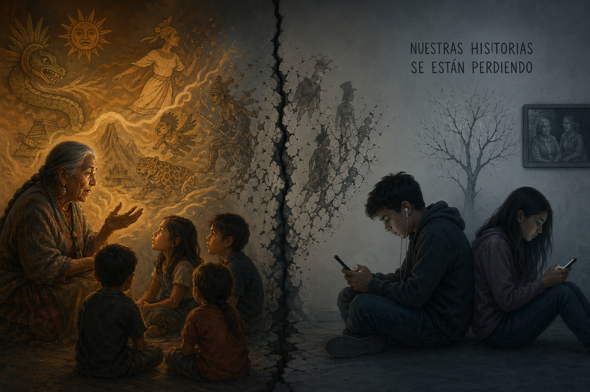
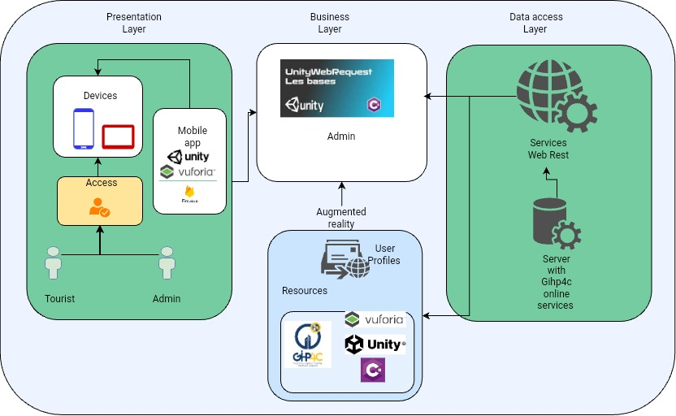

Realidad Aumentada with Frontend & Unity and Vuforia Engine
Cultures, customs, and identity, such as legends and myths, are being lost due to a lack of communication between generations. Therefore, the development and implementation of technologies such as Unity for Fronted and Vuforia Engine for the area of entertaining education with augmented reality is proposed.

Architecture design for the AREdutainmentUPS software
A logical architecture of the mobile application's operation is developed, divided by layers.

Conectate conmigo en: